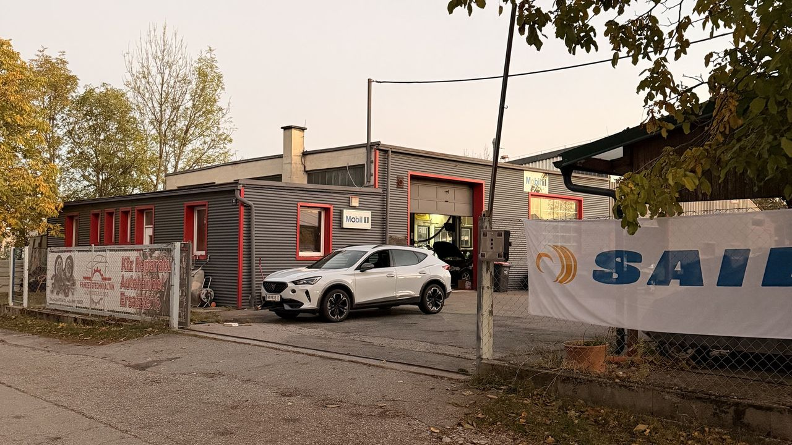
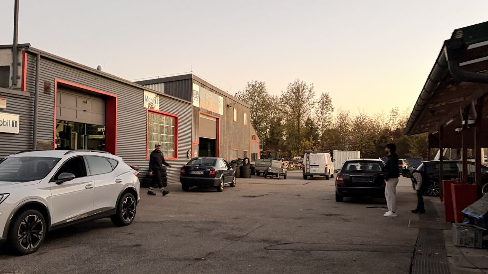
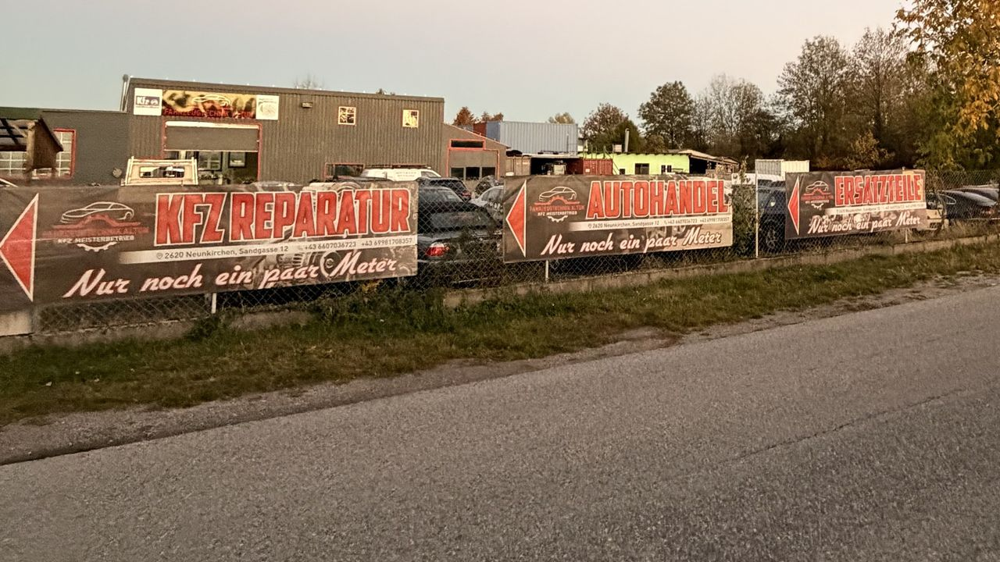

Meisterwerkstatt mit Handschlagqualität.
Alle Marken. Alle Modelle. Von Stadtauto bis Sportwagen.
Egal ob Routinecheck oder komplexe Reparatur — wir bringen jedes Fahrzeug wieder auf die Straße.
Das berühmte „Pickerl". Schnell, gründlich und ohne böse Überraschungen. Wir sagen Ihnen ehrlich, was Sache ist.
Motor, Getriebe, Bremsen, Fahrwerk — egal welches Problem, wir finden die Lösung. Für jede Marke, jedes Modell.
Regelmäßiger Ölwechsel verlängert das Leben Ihres Motors. Wir verwenden nur hochwertige Markenöle.
Modernste Diagnosegeräte für alle Fahrzeugmarken. Wir finden den Fehler — schnell und präzise.
Klimaanlage befüllen, desinfizieren und warten. Damit Sie auch im Sommer einen kühlen Kopf bewahren.
Reifenwechsel, Auswuchten, Einlagerung. Sommer oder Winter — wir haben den richtigen Reifen für Sie.
Kein anonymer Großbetrieb. Bei uns kennen Sie den, der an Ihrem Auto schraubt. Persönlich, direkt, ehrlich.
VW, BMW, Mercedes, Audi, Porsche, Ferrari — egal welches Emblem auf der Haube sitzt. Wir kennen sie alle.
Während wir uns um Ihr Auto kümmern, kümmern wir uns auch um Sie. Mit einem frischen Kaffee, gratis.
Keine versteckten Kosten, keine unnötigen Reparaturen. Wir reparieren, was repariert werden muss. Nicht mehr.
KFZ Altun ist ein Meisterbetrieb in der Sandgasse 12 in Neunkirchen. Als Familienwerkstatt von Vater & Sohn kümmern wir uns um Pickerl, Service, Reparatur und Fehlerdiagnose – für alle Marken und Modelle.
Sie brauchen ein bestimmtes Teil? Wir besorgen die passenden Autoteile und Ersatzteile für Ihr Fahrzeug und bauen sie gleich bei uns ein. So bekommen Sie alles aus einer Hand.
Wir sind für Autofahrer aus der ganzen Umgebung in Niederösterreich da:
Rufen Sie an oder schreiben Sie uns auf WhatsApp. Wir melden uns so schnell wie möglich.
Eine kurze Bewertung auf Google hilft unserem Familienbetrieb in Neunkirchen sehr. Danke!
Jetzt auf Google bewertenJa. Wir führen die §57a-Überprüfung, das sogenannte Pickerl, für Ihr Fahrzeug durch – gründlich und mit ehrlicher Auskunft, was zu tun ist.
Am einfachsten telefonisch unter +43 660 7036723 oder per WhatsApp. Wir sind Montag bis Freitag von 08:00 bis 18:00 Uhr für Sie da.
Ja. Ob VW, BMW, Mercedes, Audi oder eine andere Marke – wir reparieren und warten Fahrzeuge aller Marken und Modelle.
Ja. Wir besorgen die passenden Autoteile und Ersatzteile für Ihr Fahrzeug und bauen sie in unserer Werkstatt ein.
KFZ Altun befindet sich in der Sandgasse 12, 2620 Neunkirchen in Niederösterreich – gut erreichbar aus Ternitz, Gloggnitz, Wiener Neustadt und dem ganzen Bezirk Neunkirchen.



Sandgasse 12
2620 Neunkirchen, Niederösterreich
Mo – Fr: 08:00 – 18:00
Sa & So: Geschlossen